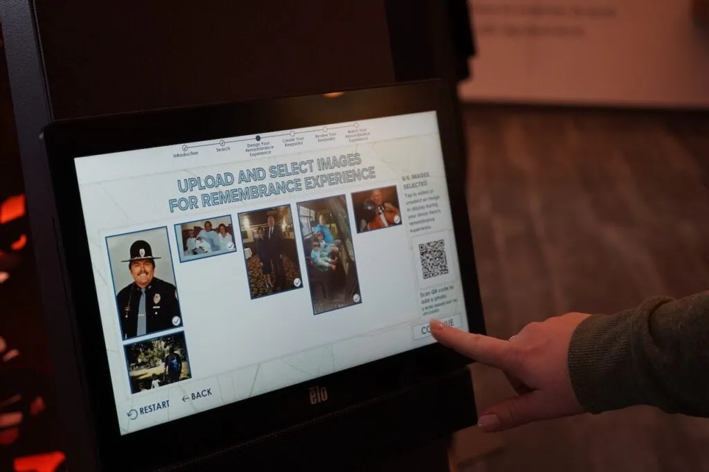
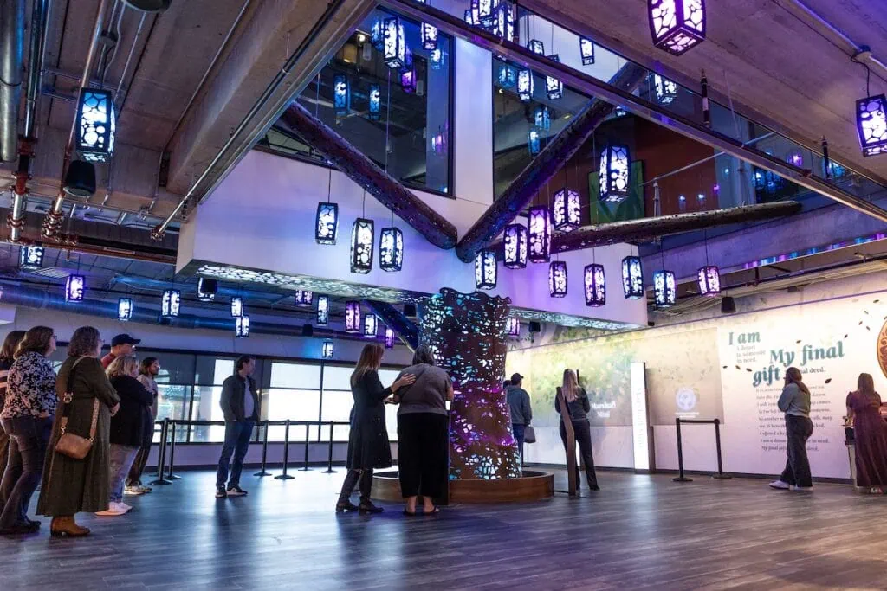
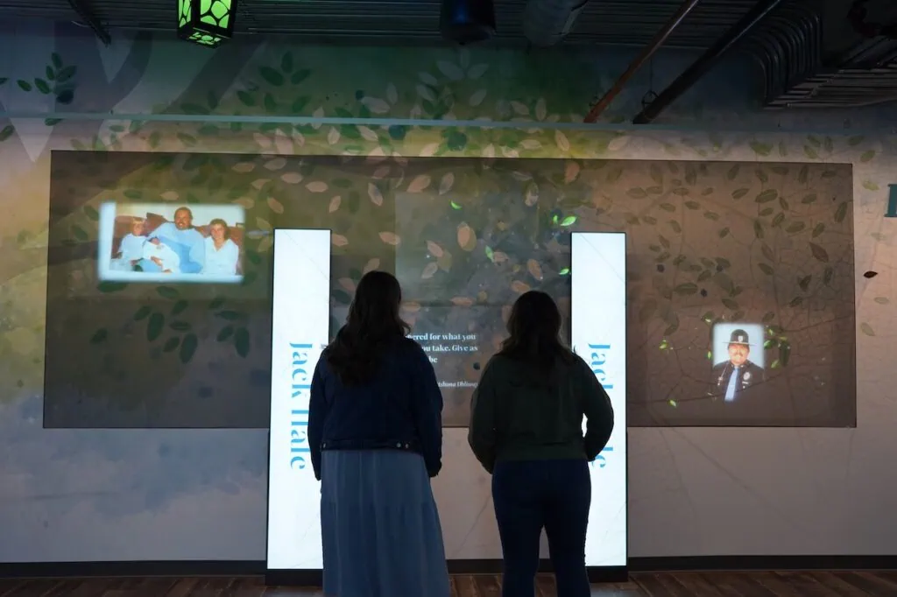

The Donor Memorial Experience is a project I worked on at Trivium Interactive for the Indiana Donor Network. The Memorial Experience was built as a way for families and loved ones of organ donors to remember their Donor Heroes through a personalized experience that fills the full installation space. Users can upload images and quotes in advance or on kiosks at the site, then use the same kiosks to trigger a show that fills the space with light, music, and highlights those images and quotes. I was the main developer of all of the on site programs and worked closely with many people to bring this beautiful project to fruition.